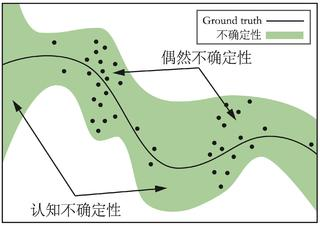
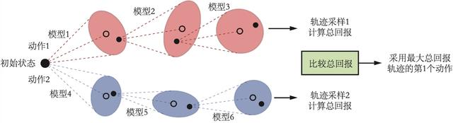
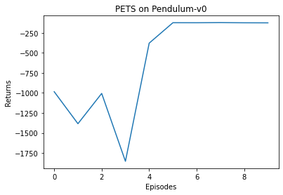

之前几章介绍了基于值函数的方法 DQN、基于策略的方法 REINFORCE 以及两者结合的方法 Actor-Critic。它们都是无模型（model-free）的方法，即没有建立一个环境模型来帮助智能体决策。而在深度强化学习领域下，基于模型（model-based）的方法通常用神经网络学习一个环境模型，然后利用该环境模型来帮助智能体训练和决策。利用环境模型帮助智能体训练和决策的方法有很多种，例如可以用与之前的 Dyna 类似的思想生成一些数据来加入策略训练中。本章要介绍的模型预测控制（model predictive control，MPC）算法并不构建一个显式的策略，只根据环境模型来选择当前步要采取的动作。
首先，让我们用一个形象的比喻来帮助理解模型预测控制方法。假设我们在下围棋，现在根据棋盘的布局，我们要选择现在落子的位置。一个优秀的棋手会根据目前局势来推演落子几步可能发生的局势，然后选择局势最好的一种情况来决定当前落子位置。
模型预测控制方法就是这样一种迭代的、基于模型的控制方法。值得注意的是，MPC 方法中不存在一个显式的策略。具体而言，MPC 方法在每次采取动作时，首先会生成一些候选动作序列，然后根据当前状态来确定每一条候选序列能得到多好的结果，最终选择结果最好的那条动作序列的第一个动作来执行。因此，在使用 MPC 方法时，主要在两个过程中迭代，一是根据历史数据学习环境模型
首先，我们定义模型预测方法的目标。在第
其中
随机打靶法（random shooting method）的做法便是随机生成
对于一些简单的环境，这个方法不但十分简单，而且效果还不错。那么，能不能在随机的基础上，根据已有的结果做得更好一些呢？接下来，我们来介绍另外一种打靶法：交叉熵方法。
交叉熵方法（cross entropy method，CEM）是一种进化策略方法，它的核心思想是维护一个带参数的分布，根据每次采样的结果来更新分布中的参数，使得分布中能获得较高累积奖励的动作序列的概率比较高。相比于随机打靶法，交叉熵方法能够利用之前采样到的比较好的结果，在一定程度上减少采样到一些较差动作的概率，从而使得算法更加高效。对于一个与连续动作交互的环境来说，每次交互时交叉熵方法的做法如下：
我们可以使用如下的代码来实现交叉熵方法，其中将采用截断正态分布。
import numpy as npfrom scipy.stats import truncnormimport gymimport itertoolsimport torchimport torch.nn as nnimport torch.nn.functional as Fimport collectionsimport matplotlib.pyplot as pltclass CEM:def __init__(self, n_sequence, elite_ratio, fake_env, upper_bound,lower_bound):self.n_sequence = n_sequenceself.elite_ratio = elite_ratioself.upper_bound = upper_boundself.lower_bound = lower_boundself.fake_env = fake_envdef optimize(self, state, init_mean, init_var):mean, var = init_mean, init_varX = truncnorm(-2, 2, loc=np.zeros_like(mean), scale=np.ones_like(var))state = np.tile(state, (self.n_sequence, 1))for _ in range(5):lb_dist, ub_dist = mean - self.lower_bound, self.upper_bound - meanconstrained_var = np.minimum(np.minimum(np.square(lb_dist / 2), np.square(ub_dist / 2)),var)# 生成动作序列action_sequences = [X.rvs() for _ in range(self.n_sequence)] * np.sqrt(constrained_var) + mean# 计算每条动作序列的累积奖励returns = self.fake_env.propagate(state, action_sequences)[:, 0]# 选取累积奖励最高的若干条动作序列elites = action_sequences[np.argsort(returns)][-int(self.elite_ratio * self.n_sequence):]new_mean = np.mean(elites, axis=0)new_var = np.var(elites, axis=0)# 更新动作序列分布mean = 0.1 * mean + 0.9 * new_meanvar = 0.1 * var + 0.9 * new_varreturn mean
带有轨迹采样的概率集成（probabilistic ensembles with trajectory sampling，PETS）是一种使用 MPC 的基于模型的强化学习算法。在 PETS 中，环境模型采用了集成学习的方法，即会构建多个环境模型，然后用这多个环境模型来进行预测，最后使用 CEM 进行模型预测控制。接下来，我们来详细介绍模型构建与模型预测的方法。
在强化学习中，与智能体交互的环境是一个动态系统，所以拟合它的环境模型也通常是一个动态模型。我们通常认为一个系统中有两种不确定性，分别是偶然不确定性（aleatoric uncertainty）和认知不确定性（epistemic uncertainty）。偶然不确定性是由于系统中本身存在的随机性引起的，而认知不确定性是由“见”过的数据较少导致的自身认知的不足而引起的，如图 16-1 所示。

在 PET 算法中，环境模型的构建会同时考虑到这两种不确定性。首先，我们定义环境模型的输出为一个高斯分布，用来捕捉偶然不确定性。令环境模型为
这里我们可以采用神经网络来构建
这样我们就得到了一个由神经网络表示的环境模型。在此基础之上，我们选择用集成（ensemble）方法来捕捉认知不确定性。具体而言，我们构建
有了环境模型的集成后，MPC 算法会用其来预测奖励和下一个状态。具体来说，每一次预测会从

首先，为了搭建这样一个较为复杂的模型，我们定义模型中每一层的构造。在定义时就必须考虑每一层都是一个集成。
device = torch.device("cuda") if torch.cuda.is_available() else torch.device("cpu")class Swish(nn.Module):''' Swish激活函数 '''def __init__(self):super(Swish, self).__init__()def forward(self, x):return x * torch.sigmoid(x)def init_weights(m):''' 初始化模型权重 '''def truncated_normal_init(t, mean=0.0, std=0.01):torch.nn.init.normal_(t, mean=mean, std=std)while True:cond = (t < mean - 2 * std) | (t > mean + 2 * std)if not torch.sum(cond):breakt = torch.where(cond,torch.nn.init.normal_(torch.ones(t.shape, device=device),mean=mean,std=std), t)return tif type(m) == nn.Linear or isinstance(m, FCLayer):truncated_normal_init(m.weight, std=1 / (2 * np.sqrt(m._input_dim)))m.bias.data.fill_(0.0)class FCLayer(nn.Module):''' 集成之后的全连接层 '''def __init__(self, input_dim, output_dim, ensemble_size, activation):super(FCLayer, self).__init__()self._input_dim, self._output_dim = input_dim, output_dimself.weight = nn.Parameter(torch.Tensor(ensemble_size, input_dim, output_dim).to(device))self._activation = activationself.bias = nn.Parameter(torch.Tensor(ensemble_size, output_dim).to(device))def forward(self, x):return self._activation(torch.add(torch.bmm(x, self.weight), self.bias[:, None, :]))
接着，使用高斯分布的概率模型来定义一个集成模型。
class EnsembleModel(nn.Module):''' 环境模型集成 '''def __init__(self,state_dim,action_dim,ensemble_size=5,learning_rate=1e-3):super(EnsembleModel, self).__init__()# 输出包括均值和方差,因此是状态与奖励维度之和的两倍self._output_dim = (state_dim + 1) * 2self._max_logvar = nn.Parameter((torch.ones((1, self._output_dim // 2)).float() / 2).to(device),requires_grad=False)self._min_logvar = nn.Parameter((-torch.ones((1, self._output_dim // 2)).float() * 10).to(device),requires_grad=False)self.layer1 = FCLayer(state_dim + action_dim, 200, ensemble_size,Swish())self.layer2 = FCLayer(200, 200, ensemble_size, Swish())self.layer3 = FCLayer(200, 200, ensemble_size, Swish())self.layer4 = FCLayer(200, 200, ensemble_size, Swish())self.layer5 = FCLayer(200, self._output_dim, ensemble_size,nn.Identity())self.apply(init_weights) # 初始化环境模型中的参数self.optimizer = torch.optim.Adam(self.parameters(), lr=learning_rate)def forward(self, x, return_log_var=False):ret = self.layer5(self.layer4(self.layer3(self.layer2(self.layer1(x)))))mean = ret[:, :, :self._output_dim // 2]# 在PETS算法中,将方差控制在最小值和最大值之间logvar = self._max_logvar - F.softplus(self._max_logvar - ret[:, :, self._output_dim // 2:])logvar = self._min_logvar + F.softplus(logvar - self._min_logvar)return mean, logvar if return_log_var else torch.exp(logvar)def loss(self, mean, logvar, labels, use_var_loss=True):inverse_var = torch.exp(-logvar)if use_var_loss:mse_loss = torch.mean(torch.mean(torch.pow(mean - labels, 2) *inverse_var,dim=-1),dim=-1)var_loss = torch.mean(torch.mean(logvar, dim=-1), dim=-1)total_loss = torch.sum(mse_loss) + torch.sum(var_loss)else:mse_loss = torch.mean(torch.pow(mean - labels, 2), dim=(1, 2))total_loss = torch.sum(mse_loss)return total_loss, mse_lossdef train(self, loss):self.optimizer.zero_grad()loss += 0.01 * torch.sum(self._max_logvar) - 0.01 * torch.sum(self._min_logvar)loss.backward()self.optimizer.step()
接下来，我们定义一个EnsembleDynamicsModel的类，把模型集成的训练设计得更加精细化。具体而言，我们并不会选择模型训练的轮数，而是在每次训练的时候将一部分数据单独取出来，用于验证模型的表现，在 5 次没有获得表现提升时就结束训练。
class EnsembleDynamicsModel:''' 环境模型集成,加入精细化的训练 '''def __init__(self, state_dim, action_dim, num_network=5):self._num_network = num_networkself._state_dim, self._action_dim = state_dim, action_dimself.model = EnsembleModel(state_dim,action_dim,ensemble_size=num_network)self._epoch_since_last_update = 0def train(self,inputs,labels,batch_size=64,holdout_ratio=0.1,max_iter=20):# 设置训练集与验证集permutation = np.random.permutation(inputs.shape[0])inputs, labels = inputs[permutation], labels[permutation]num_holdout = int(inputs.shape[0] * holdout_ratio)train_inputs, train_labels = inputs[num_holdout:], labels[num_holdout:]holdout_inputs, holdout_labels = inputs[:num_holdout], labels[:num_holdout]holdout_inputs = torch.from_numpy(holdout_inputs).float().to(device)holdout_labels = torch.from_numpy(holdout_labels).float().to(device)holdout_inputs = holdout_inputs[None, :, :].repeat([self._num_network, 1, 1])holdout_labels = holdout_labels[None, :, :].repeat([self._num_network, 1, 1])# 保留最好的结果self._snapshots = {i: (None, 1e10) for i in range(self._num_network)}for epoch in itertools.count():# 定义每一个网络的训练数据train_index = np.vstack([np.random.permutation(train_inputs.shape[0])for _ in range(self._num_network)])# 所有真实数据都用来训练for batch_start_pos in range(0, train_inputs.shape[0], batch_size):batch_index = train_index[:, batch_start_pos:batch_start_pos +batch_size]train_input = torch.from_numpy(train_inputs[batch_index]).float().to(device)train_label = torch.from_numpy(train_labels[batch_index]).float().to(device)mean, logvar = self.model(train_input, return_log_var=True)loss, _ = self.model.loss(mean, logvar, train_label)self.model.train(loss)with torch.no_grad():mean, logvar = self.model(holdout_inputs, return_log_var=True)_, holdout_losses = self.model.loss(mean,logvar,holdout_labels,use_var_loss=False)holdout_losses = holdout_losses.cpu()break_condition = self._save_best(epoch, holdout_losses)if break_condition or epoch > max_iter: # 结束训练breakdef _save_best(self, epoch, losses, threshold=0.1):updated = Falsefor i in range(len(losses)):current = losses[i]_, best = self._snapshots[i]improvement = (best - current) / bestif improvement > threshold:self._snapshots[i] = (epoch, current)updated = Trueself._epoch_since_last_update = 0 if updated else self._epoch_since_last_update + 1return self._epoch_since_last_update > 5def predict(self, inputs, batch_size=64):mean, var = [], []for i in range(0, inputs.shape[0], batch_size):input = torch.from_numpy(inputs[i:min(i +batch_size, inputs.shape[0])]).float().to(device)cur_mean, cur_var = self.model(input[None, :, :].repeat([self._num_network, 1, 1]),return_log_var=False)mean.append(cur_mean.detach().cpu().numpy())var.append(cur_var.detach().cpu().numpy())return np.hstack(mean), np.hstack(var)
有了环境模型之后，我们就可以定义一个FakeEnv，主要用于实现给定状态和动作，用模型集成来进行预测。该功能会用在 MPC 算法中。
class FakeEnv:def __init__(self, model):self.model = modeldef step(self, obs, act):inputs = np.concatenate((obs, act), axis=-1)ensemble_model_means, ensemble_model_vars = self.model.predict(inputs)ensemble_model_means[:, :, 1:] += obs.numpy()ensemble_model_stds = np.sqrt(ensemble_model_vars)ensemble_samples = ensemble_model_means + np.random.normal(size=ensemble_model_means.shape) * ensemble_model_stdsnum_models, batch_size, _ = ensemble_model_means.shapemodels_to_use = np.random.choice([i for i in range(self.model._num_network)], size=batch_size)batch_inds = np.arange(0, batch_size)samples = ensemble_samples[models_to_use, batch_inds]rewards, next_obs = samples[:, :1], samples[:, 1:]return rewards, next_obsdef propagate(self, obs, actions):with torch.no_grad():obs = np.copy(obs)total_reward = np.expand_dims(np.zeros(obs.shape[0]), axis=-1)obs, actions = torch.as_tensor(obs), torch.as_tensor(actions)for i in range(actions.shape[1]):action = torch.unsqueeze(actions[:, i], 1)rewards, next_obs = self.step(obs, action)total_reward += rewardsobs = torch.as_tensor(next_obs)return total_reward
接下来定义经验回放池的类Replay Buffer。与之前的章节对比，此处经验回放缓冲区会额外实现一个返回所有数据的函数。
class ReplayBuffer:def __init__(self, capacity):self.buffer = collections.deque(maxlen=capacity)def add(self, state, action, reward, next_state, done):self.buffer.append((state, action, reward, next_state, done))def size(self):return len(self.buffer)def return_all_samples(self):all_transitions = list(self.buffer)state, action, reward, next_state, done = zip(*all_transitions)return np.array(state), action, reward, np.array(next_state), done
接下来是 PETS 算法的主体部分。
class PETS:''' PETS算法 '''def __init__(self, env, replay_buffer, n_sequence, elite_ratio,plan_horizon, num_episodes):self._env = envself._env_pool = replay_bufferobs_dim = env.observation_space.shape[0]self._action_dim = env.action_space.shape[0]self._model = EnsembleDynamicsModel(obs_dim, self._action_dim)self._fake_env = FakeEnv(self._model)self.upper_bound = env.action_space.high[0]self.lower_bound = env.action_space.low[0]self._cem = CEM(n_sequence, elite_ratio, self._fake_env,self.upper_bound, self.lower_bound)self.plan_horizon = plan_horizonself.num_episodes = num_episodesdef train_model(self):env_samples = self._env_pool.return_all_samples()obs = env_samples[0]actions = np.array(env_samples[1])rewards = np.array(env_samples[2]).reshape(-1, 1)next_obs = env_samples[3]inputs = np.concatenate((obs, actions), axis=-1)labels = np.concatenate((rewards, next_obs - obs), axis=-1)self._model.train(inputs, labels)def mpc(self):mean = np.tile((self.upper_bound + self.lower_bound) / 2.0,self.plan_horizon)var = np.tile(np.square(self.upper_bound - self.lower_bound) / 16,self.plan_horizon)obs, done, episode_return = self._env.reset(), False, 0while not done:actions = self._cem.optimize(obs, mean, var)action = actions[:self._action_dim] # 选取第一个动作next_obs, reward, done, _ = self._env.step(action)self._env_pool.add(obs, action, reward, next_obs, done)obs = next_obsepisode_return += rewardmean = np.concatenate([np.copy(actions)[self._action_dim:],np.zeros(self._action_dim)])return episode_returndef explore(self):obs, done, episode_return = self._env.reset(), False, 0while not done:action = self._env.action_space.sample()next_obs, reward, done, _ = self._env.step(action)self._env_pool.add(obs, action, reward, next_obs, done)obs = next_obsepisode_return += rewardreturn episode_returndef train(self):return_list = []explore_return = self.explore() # 先进行随机策略的探索来收集一条序列的数据print('episode: 1, return: %d' % explore_return)return_list.append(explore_return)for i_episode in range(self.num_episodes - 1):self.train_model()episode_return = self.mpc()return_list.append(episode_return)print('episode: %d, return: %d' % (i_episode + 2, episode_return))return return_list
大功告成！让我们在倒立摆环境上试一下吧，以下代码需要一定的运行时间。
buffer_size = 100000n_sequence = 50elite_ratio = 0.2plan_horizon = 25num_episodes = 10env_name = 'Pendulum-v0'env = gym.make(env_name)replay_buffer = ReplayBuffer(buffer_size)pets = PETS(env, replay_buffer, n_sequence, elite_ratio, plan_horizon,num_episodes)return_list = pets.train()episodes_list = list(range(len(return_list)))plt.plot(episodes_list, return_list)plt.xlabel('Episodes')plt.ylabel('Returns')plt.title('PETS on {}'.format(env_name))plt.show()
episode: 1, return: -985episode: 2, return: -1384episode: 3, return: -1006episode: 4, return: -1853episode: 5, return: -378episode: 6, return: -123episode: 7, return: -124episode: 8, return: -122episode: 9, return: -124episode: 10, return: -125

可以看出，PETS 算法的效果非常好，但是由于每次选取动作都需要在环境模型上进行大量的模拟，因此运行速度非常慢。与 SAC 算法的结果进行对比可以看出，PETS 算法大大提高了样本效率，在比 SAC 算法的环境交互次数少得多的情况下就取得了差不多的效果。
通过学习与实践，我们可以看出模型预测控制（MPC）方法有着其独特的优势，例如它不用构建和训练策略，可以更好地利用环境，可以进行更长步数的规划。但是 MPC 也有其局限性，例如模型在多步推演之后的准确性会大大降低，简单的控制策略对于复杂系统可能不够。MPC 还有一个更为严重的问题，即每次计算动作的复杂度太大，这使其在一些策略及时性要求较高的系统中应用就变得不太现实。
[1] CHUA K, CALANDRA R, MCALLISTER R, et al. Deep reinforcement learning in a handful of trials using probabilistic dynamics models [J]. Advances in neural information processing systems, 2018: 31.
[2] LAKSHMINARAYANAN B, PRITZEL A, BLUNDELL C. Simple and scalable predictive uncertainty estimation using deep ensembles [J]. Advances in neural information processing systems, 2017: 30.